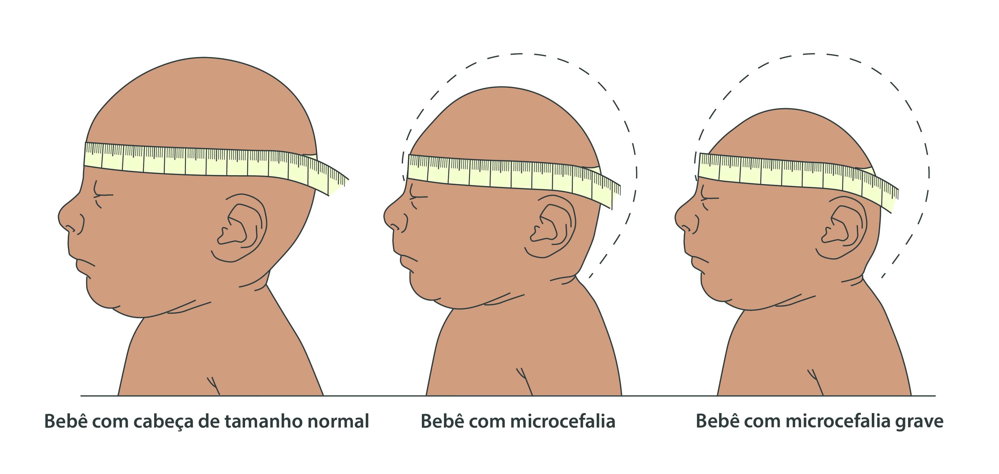

O que é o Zika Vírus?
A Zika é uma arbovirose (doença transmitida por mosquitos) causada pelo vírus Zika (ZIKV). Sua transmissão ocorre primariamente pela picada do mosquito Aedes aegypti, o mesmo vetor da dengue e da chikungunya. O vírus também pode ser transmitido sexualmente e de mãe para feto.
Formas de Transmissão
Principal Vetor: A principal forma de contágio é através da picada da fêmea infectada do mosquito Aedes aegypti.
Outras Formas: É crucial informar sobre outras vias de transmissão importantes:
- Transmissão vertical (gestacional): Da gestante para o feto.
- Transmissão sexual.
- Transfusão de sangue (menos comum).
Sinais e sintomas:
- Período de Incubação: Varia, em média, de 3 a 14 dias.
- Casos Assintomáticos: Mencione que a maioria das pessoas infectadas é assintomática (não apresenta sintomas).
Sintomas comuns:
- Febre baixa (ou ausente).
- Exantema/Erupção cutânea (manchas vermelhas pelo corpo), geralmente com coceira.
- Conjuntivite (olho vermelho) sem secreção.
- Dores nas articulações (artralgia) e musculares (mialgia).
- Dor de cabeça.
Duração: Os sintomas costumam ser leves e duram de 2 a 7 dias.
Complicações e Consequências
Microcefalia e Síndrome Congênita do Zika: Destacar o consenso científico de que a infecção durante a gravidez é uma causa de microcefalia e outras malformações do sistema nervoso central no feto/bebê.
Síndrome de Guillain-Barré (SGB): Mencionar a associação do vírus Zika com o risco de desenvolvimento da SGB (uma condição neurológica grave).

Diagnostico e tratamento
O diagnóstico do Zika é feito com base na avaliação clínica (sintomas e histórico de exposição), podendo ser confirmado por testes laboratoriais (como RT-PCR ou sorologia). Não existe tratamento ou antiviral específico contra o Vírus Zika. O tratamento é de suporte e visa aliviar os sintomas: Repouso e ingestão de líquidos para evitar a desidratação. Uso de analgésicos e antitérmicos (como paracetamol ou dipirona) para controlar a febre e a dor. ALERTA IMPORTANTE: Não se deve tomar ácido acetilsalicílico (AAS) ou anti-inflamatórios não esteroides (AINEs) sem orientação médica. Esses medicamentos podem aumentar o risco de complicações hemorrágicas, especialmente se o paciente tiver Dengue (que apresenta sintomas iniciais semelhantes).
prevenção
A prevenção do Zika depende de duas frentes principais: o combate ao mosquito e a proteção individual.
1. Combate ao Mosquito (Aedes aegypti)
A medida mais eficaz é a eliminação dos criadouros, impedindo a proliferação do mosquito: Não deixe água parada em pneus, garrafas, vasos de plantas, calhas, baldes, lonas ou quaisquer outros recipientes. Mantenha caixas d'água e cisternas bem vedadas. Coloque areia nos vasos de plantas que acumulam água.
2. Proteção Individual
Essas medidas evitam a picada do mosquito e a transmissão por outras vias: Use repelentes nas áreas expostas do corpo (seguindo as instruções do fabricante). Use roupas que cubram a maior parte do corpo (calças e camisas de manga longa), especialmente em horários de pico do mosquito. Instale telas/mosquiteiros em janelas, portas e sobre as camas. Pratique sexo seguro (uso de preservativos), pois o vírus pode ser transmitido sexualmente.